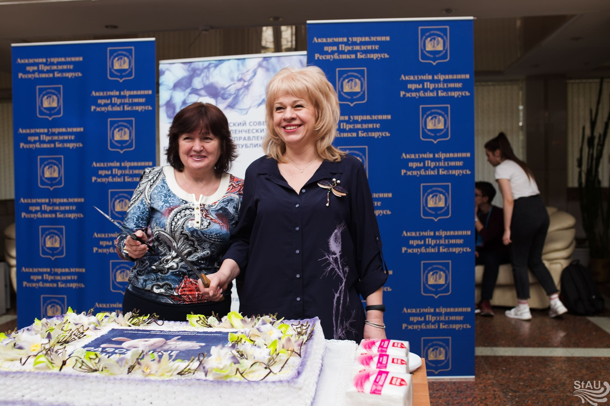
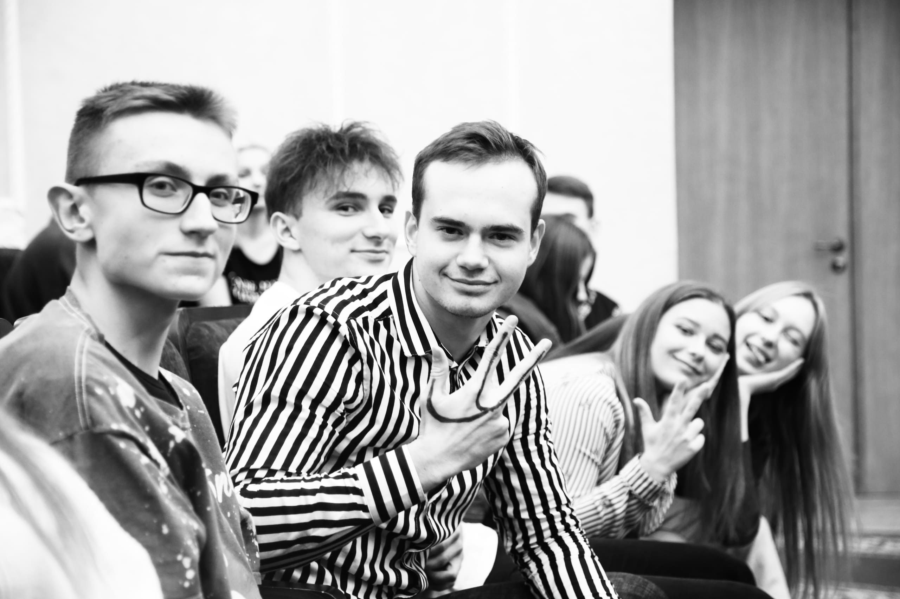

Академия управления при Президенте Республики Беларусь
Управление информационными ресурсами
Будущее начинается здесь!
Не упусти возможность стать частью нового поколения лидеров Беларуси!
Абитуриенту
от 100
белорусских рублей стипендия
37%
выпускников руководят крупнейшими проектами
48
изучаемых дисциплин
1215+
выпускников
Проходные баллы:
ЦТ
русский язык
математика
английский язык
2018
бюджет
341
внебюджет
239
2019
бюджет
341
внебюджет
264
Места трудоустройства выпускников УИР:
EPAM Systems
Минский городской исполнительный комитет
IBA GROUP
Национальный статистический комитет РБ
Ernst and Young
Минская центральная таможня
Белнефтестрах
Белмедпрепораты
iTechArt Group
Itransitions
Примерный перечень должностей для выпускников УИР
Сфера управления
Project manager
Администратор
Главный исполнительный директор
Менеджер по информационным технологиям
Сфера IT
Бизнес-аналитик
Администратор баз данных
Web-разработчик
Тестировщик
Программист
Сфера экономики
Экономист вычислительного центра
Специалист бизнес-продаж
Финансист
Аналитик


Мы-это
Связующее звено между IT-сферой и бизнес-сообществом
Оптимизация бизнес-процессов
Одна из самых востребованных специальностей
Надежный фундамент для начала стремительного карьерного роста
Вы научитесь выявлять проблемы бизнеса, находить максимально эффективное решение и будете выступать посредником между заказчиком и командой программистов
Этапы, которые Вы пройдёте:
Выявление потребностей заказчика, понимание проблемы, которую он хочет решить
Формирование концепции решения
Оформление концепции в техническое задание с конкретными требованиями к будущему продукту
Детализация каждого требования в виде спецификаций
Вы научитесь определять связи между отделами, внедрять функциональное управление, автоматизировать бизнес. У Вас появится понимание организации как целостной системы в развитии, факторов ее деятельности.
Уникальность данной специальности заключается в построении обучения на основе интегрированных знаний из областей управления, экономики, математического моделирования и информационных технологий.
Формула специальности:
Вы научитесь определять свою цель на несколько лет вперед, разбивать её на шаги и выбирать стратегию достижения. Вы узнаете, как организовать работу с ментором, построить личный бренд и создать CV.
Преподаватели
Белодед Николай Иванович
профессор, кандидат технических наук
Читаемые курсы: «Операционные системы»; «Алгоритмизация и программирование»; «Системы баз данных»; «Технологии программирования».
Сфера научных интересов: интегрированные информационные системы управления, инновации в образовании.
Автор более 140 печатных работ, в том числе 10 учебных и 4 учебно-методических пособий.
Имеет более 90 научных работ, в том числе 7 авторских свидетельств на изобретения, является автором 4 учебных пособий, соавтором 3 учебных пособий по информационным технологиям.
Автор более 100 научных публикаций, в том числе учебных пособий «Информационные технологии менеджера», «Ситуационный анализ и моделирование на основе информационных технологий баз данных»
Преподаваемые дисциплины: «Информационные технологии маркетинга» «Информационные ресурсы» «Web-дизайн и компьютерная графика»
Сфера научных интересов: информационные технологии в различных сферах деятельности; информационные системы управления кадрами; развитие сферы образования.
Преподаваемые дисциплины: «Web-дизайн и компьютерная графика», «Алгоритмизация и программирование», «Экономика информационных ресурсов, технологии систем», «Информационный менеджмент», «Теория информации», «Эконометрика», «Ситуационный анализ и моделирование управленческих решений».
Читаемые курсы: «Информационные технологии маркетинга»; «Делопроизводство в государственной службе»; «Мировые и национальные информационные ресурсы».
Сфера научных интересов: информационно-аналитическое обеспечение процесса переподготовки руководящих кадров Республики Беларусь, технологии электронного правительства.
Автор 26 печатных работ, в том числе 5 учебно-методических пособий.
Преподаваемые дисциплины: «Высшая математика», «Дискретная математика» Областью научных интересов являются методы обработки и анализа данных на ПК. Автор более 30 научных публикаций. «Дискретная математика».
Читаемые курсы: «Информационные системы и технологии», «Информационные технологии», «Менеджмент информационных систем», «Компьютерные сети и Интернет-технологии», «Алгоритмизация и программирование» (практика).
Автор более 40 печатных работ, в том числе 4 изобретений.
Преподаваемые дисциплины: «Алгоритмизация и программирование», «Системы баз данных», «Администрирование информационных систем», «WEB технологии», «Операционные системы и компьютерные сети»
Автор 15 печатных работ, в том числе 5 учебно-методических пособий.
С 1983 по 2001 год работал научным сотрудником в Институте физики твердого тела и полупроводников Национальной академии наук Беларуси.
Область научных интересов: математическое моделирование экономических процессов и систем.
Автор более 20 научных публикаций.
Читаемые курсы: «Стандарты информационных систем и технологий», «Делопроизводство», «Системы управления структурами и потоками данных в государственном управлении».
Автор 183 печатных работ, в том числе 12 учебников, учебных и учебно-методических пособий.
Кто я по окончании обучения? Экономист? Программист? Или всё-таки управленец?
Мы тебя поздравляем, ты попал туда, куда нужно. Ты попробуешь себя во всех сферах и поймешь, что тебе ближе, а также ты сможешь применять все свои навыки из разных сфер в одной специальности, например: бизнес-аналитик или управленец в IT-сфере. В дипломе ты - «менеджер-экономист информационных систем».
Я увижу Президента???
Президент посещает Академию, чтобы что-то здесь усовершенствовать и тогда у студентов появляется возможность задать ему вопросы и предложить свежие идеи.
Какова вероятность не оказаться в списке «заселенных в общежитие»?
Так не бывает. Академия предоставляет общежитие всем иногородним студентам.
Сложно ли адаптироваться в Академии?
Нет. Первые 3 месяца тебе помогают ребята со 2 курса – студенческие кураторы. Вместе вы будете готовиться к мероприятиям и благодаря им ты почувствуешь себя частью УИРовской семьи.
Если у вас всё так официально, то белая рубашка и галстук обязательны?
Нет, smart casual идеально подходит для студентов Академии.
Смогу ли я проявить себя в чём-то кроме учебы?
Конечно да! У нас есть 3 организации: Студсовет, БРСМ и Профком. Профком организовывает маленькие и атмосферные мероприятия внутри Академии (День первокурсника, День обнимашек, Масленница и т.д.). Студсовет также организовывает мероприятия внутри Академии, однако более масштабные (Визитка, Новогодний Бал-маскарад, Студенческий куратор, Мисс Академия Управления и т.д.). БРСМ торгует личиком вне Академии, т.е. выездные мероприятия: встречи гостей, вручение наград, посещение различных конференций. Ты обязательно сможешь найти то, что тебе по душе!
А если я пропустил лекцию, то есть ли электронные конспекты, чтобы ее восстановить?
У нас есть система дистанционного образования – там есть все электронные материалы для УИРа.
Есть ли какие-то дополнительные возможности для формирования своего профессионализма?
Да, специально для студентов УИР в 2009 г. был создан Информационно-кибернетический клуб «IC-Club» с целью формирования у студентов информационно-коммуникационного профессионализма, необходимого для управления информационными системами.
Секции: 1) Бизнес-анализ (Шаститко Д.В. Шешолко В.К.)
2) IStudy центр (Белодед Н.И.)
3) Ведение социальных сетей ( UIR.BY Будущее начинается здесь, Ассоциация выпускников)
Руководителем клуба является Плющ Олег Борисович
Председатель - Михаленя Галина, студентка 4 курса, специальности УИР
Отзывы выпускников
Director of Business Development
Артём Карпеченко
-Расскажите про вашу работу на данный момент? Я директор по развитию бизнеса в компании Blinger.io. За 4 года мы вырастили компанию с 5 человек до 20, подняли 3 раунда инвестиций. Последний раунд был с оценкой компании в 5 млн. долларов. Привлекли сотни клиентов от мелких интернет магазинов до крупных банков и авиакомпаний. Как обучение на уире повлияло на вашу будущую карьеру? Я научился учиться, разбираться в разных областях от экономики до менеджмента, от программирования до права. Еще в Академии из-за относительно небольшого количества студентов создается отличное комьюнити.
Middle Business Analyst
Алёна Жучковская
На данный момент я занимаю позицию Middle Business Analyst в компании eWave. Сейчас я в роли БА веду несколько иностранных проектов (Австралия, Америка), немного помогаю на стадии пресейлов (проводим анализ новых проектов и тестируем их), а также я
являюсь одним из бизнес-аналитиков, кто ведет внутрикомпанейскую школу джуниор бизнес-аналитиков. (Рассказываем новым ребятам о компании, работе БА, обучаем основным БА навыкам, а также специфики работы в компании). Честно говоря, работа мне очень нравится, хоть порой бывают сложные и стрессовые дни. Не знаю, надо ли это, но обычно мой день строится следующим образом (коммуникация с клиентом (Австралия), работа с командой, написание аналитических документов, работа в БА школе,
Как вам академия - общее впечатление такое: ни разу не пожалела, что отучилась именно в этом вузе. Пришла учиться по совету родственника, который тоже окончил УИР. Также
перед поступлениям писала в Вконтакте студентам, узнавала их отзывы, ни разу плохого отзыва не получила от них 2. какие у нее плюсы - очень хорошее место, много бюджетных мест (по крайне мере в год нашего набора так было), стипендия выше, чем в других университетах, классные преподаватели на всех специальностях, свой спорткомплекс, академия идет навстречу людям, которые сами находят себе места для практики/распределения, любой преподаватель может помочь при написании курсовой/диплома, даже если не курирует тебя, 1 смена обучения была очень кстати 3. какие плюсы нашей специальности - крутые преподаватели как по знаниям, так и по человеческим отношениям (отпускали на работу, разрешали приходить сдавать лабораторные с другими группами), неплохая техническая база, предметы не из какой-то одной определенно
В общем, Академию я закончила в 2015-ом. Я училась на УИРе, когда еще обучение было 5 лет. Так быстро время пролетело. Вы меня даже немного в ностальгию погрузили.
На данный момент я живу и работаю в Эстонии в продуктовой компании. Должность моя называется Software automation engineer, test lead. По сути каждый день я пишу код (java) и занимаюсь микроменеджментов тестовых процессов на проекте. Как я оказалась в Эстонии - не специально. У меня не было никогда идеи уехать из Беларуси, но в какой-то момент предложили классный проект. Договорились, что приеду на год, а там посмотрим, но год как-то затянулся
В целом, если у меня спросят, работаешь ли ты по специальности, я скажу, да. Конечно, нас не учили на УИРе непосредственно автоматизации тестирования, но нам дали базовые знания в разных сферах. Исходя из которых я, наверно, смогла как-то лучше осознать для себя, чем бы мне хотелось заниматься конкретно. Например, мне нравилась алгоритмизация, базы данных, дискретная математика, английский и др. В общем, если так подумать, это все, прямо или косвенно, я использую в работе.
Помню, как на работе многие удивлялись, что я с айти бэкграундом из Академии управления. Я была у них на тот момент первым таким человеком. Обычно брали людей из БГУИРа или БНТУ. Потом появились еще люди из Академии, так что я думаю, мне удалось создать хорошую репутацию УИРу на тот момент.
Добрый вечер) На данный момент я занимаю позицию Middle Business Analyst в компании eWave. Сейчас я в роли БА веду несколько иностранных проектов (Австралия, Америка), немного помогаю на стадии пресейлов (проводим анализ новых проектов и тестируем их), а также я
являюсь одним из бизнес-аналитиков, кто ведет внутрикомпанейскую школу джуниор бизнес-аналитиков. (Рассказываем новым ребятам о компании, работе БА, обучаем основным БА навыкам, а также специфики работы в компании). Честно говоря, работа мне очень нравится, хоть порой бывают сложные и стрессовые дни. Не знаю, надо ли это, но обычно мой день строится следующим образом (коммуникация с клиентом (Австралия), работа с командой, написание аналитических документов, работа в БА школе, коммуникация с клиентом (Америка)). И так по кругу, конечно, не все дни одинаковые, но активность которая есть постоянно - это общение с клиентом и командой.
На самом деле УИР дал мне базу, которая позволила успешно поступить на курсы (да-да, чтобы попасть на курсы по БА, нужно было пройти собеседование)
ну и, конечно, IT база необходима на работе
очень сильно помогло то, что в академии мне дали понимание таких пунктов, как: программирование, базы данных, проектирование ИС и вообще понятие ИС, научили моделировать процессы. Многому из этого не учат на курсах, но знание этого необходимо в работе, ведь работа БА - это не просто разговор с клиентом - это также умение предложить решение клиенту с технической точки зрения, написать техническую спецификацию для девелоперов, дать клиенту советы касательно технических сторон. Все это очень важно) Также стоит отметить, что у нас в Академии давали IT английский) тоже очень помогла мне, так как у меня нет ни одного русскоязычного клиента, а общаться нужно очень много) Для старта работы мне хватило знаний английского - ну а дальше, как говориться, учимся на работе.
Еще, у нас было несколько гуманитираных предметов в академии. Когда мы учились - я не понимала, зачем они мне нужны и что я вообще делаю на этих парах, например, на психологии или социологии. В результате эти предметы также оказались очень полезными, ведь когда ты работаешь в команде с разными людьми, у каждого свой характер, мировоззрение нужно уметь понять каждого, приспособиться, сплотить команду. Также нужно понимать и культурные особенности при общении с клиентом, уметь правильно вести с ним диалог в любой ситуации: будь то приятные вещи или моменты, когда нужно отстоять свою команду.
Даша Самило
Test Engineer
-Как вам академия Общее впечатление такое: ни разу не пожалела, что отучилась именно в этом вузе. Пришла учиться по совету родственника, который тоже окончил УИР. Также
перед поступлениям писала в Вконтакте студентам, узнавала их отзывы, ни разу плохого отзыва не получила от них 2. какие у нее плюсы - очень хорошее место, много бюджетных мест (по крайне мере в год нашего набора так было), стипендия выше, чем в других университетах, классные преподаватели на всех специальностях, свой спорткомплекс, академия идет навстречу людям, которые сами находят себе места для практики/распределения, любой преподаватель может помочь при написании курсовой/диплома, даже если не курирует тебя, 1 смена обучения была очень кстати 3. какие плюсы нашей специальности - крутые преподаватели как по знаниям, так и по человеческим отношениям (отпускали на работу, разрешали приходить сдавать лабораторные с другими группами), неплохая техническая база, предметы не из какой-то одной определенной сферы, что дает возможность выбора будущей профессии, английский 3 года (супер полезно для айтишников), хорошая образовательная программа 4. как повлияла учеба в академии на ваше будущее место работы (где и кем вы сейчас работаете ) - преподаватели практически с самого начала обучения рассказывали, куда поступают выпускники, какие специальности актуальны (в основном ИТ направления), как люди активно продвигаются по карьерным лестницам, уезжают за границу и т.д. Также многие в курсе, какие компании какие курсы проводят, куда можно податься для обучения, в целом могут дать дельные советы на основе своего опыта. Работаю я сейчас инженером-тестировщиком в ИТ компании, работаю с 5 семестра, занимаюсь ручным и автоматизированным тестированием. Почему пошла в тестировщики? Изначально хотелось ИТ, но чтобы начать с самых низов, узнать, как все работает, устроено, ведь расти и менять деятельность (на программирование, БА, дизайн) можно без проблем. Также много выпускников академии идут в тестирование, так как в Академии достаточно дается технических знаний, чтобы быть лучше выпускников иняза и т.д., которые обычно работают тоже тестерами. Не хотела сразу заниматься программированием, так как у нас очень мало его в Академии, да и в принципе не на то план обучения направления.
Вероника Крамаренко
Software automation engineer, test lead
-Как вам академия В общем, Академию я закончила в 2015-ом. Я училась на УИРе, когда еще обучение было 5 лет. Так быстро время пролетело. Вы меня даже немного в ностальгию погрузили.
На данный момент я живу и работаю в Эстонии в продуктовой компании. Должность моя называется Software automation engineer, test lead. По сути каждый день я пишу код (java) и занимаюсь микроменеджментов тестовых процессов на проекте. Как я оказалась в Эстонии - не специально. У меня не было никогда идеи уехать из Беларуси, но в какой-то момент предложили классный проект. Договорились, что приеду на год, а там посмотрим, но год как-то затянулся
В целом, если у меня спросят, работаешь ли ты по специальности, я скажу, да. Конечно, нас не учили на УИРе непосредственно автоматизации тестирования, но нам дали базовые знания в разных сферах. Исходя из которых я, наверно, смогла как-то лучше осознать для себя, чем бы мне хотелось заниматься конкретно. Например, мне нравилась алгоритмизация, базы данных, дискретная математика, английский и др. В общем, если так подумать, это все, прямо или косвенно, я использую в работе.
Помню, как на работе многие удивлялись, что я с айти бэкграундом из Академии управления. Я была у них на тот момент первым таким человеком. Обычно брали людей из БГУИРа или БНТУ. Потом появились еще люди из Академии, так что я думаю, мне удалось создать хорошую репутацию УИРу на тот момент.